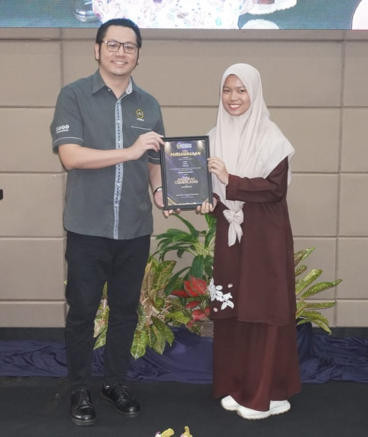
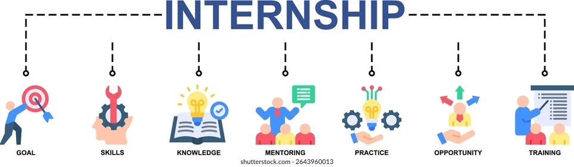
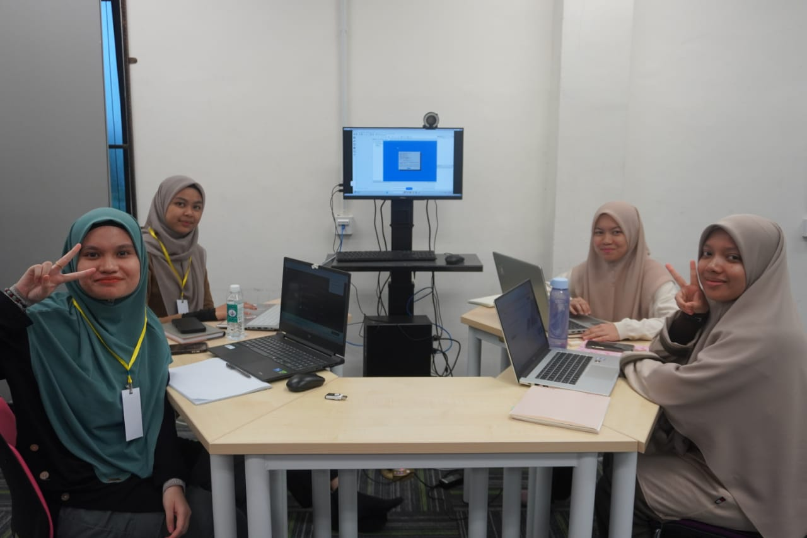
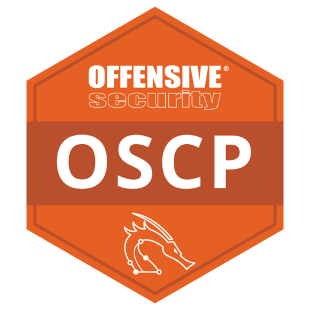

Current Stage
Final-Year Network Security Student
At present, I am focusing on building a strong foundation in networking and cybersecurity while gaining practical experience through academic projects and laboratory activities.

Short-Term Goal
Seeking Internship Opportunities
My immediate goal is to secure internship opportunities that will provide exposure to real-world technologies, industry practices, and professional environments.

Skill Development
Hands-On Learning
I aim to enhance my competencies in network troubleshooting, traffic analysis, Linux environments, and security fundamentals through continuous practice and hands-on learning.

Continuous Growth
Learning and Professional Development
I believe that continuous learning plays an important role in professional development. Therefore, I actively seek opportunities to improve my knowledge through projects, self-learning, and technical communities.

Professional Certifications
Expanding Knowledge and Certifications
To support my long-term professional growth, I plan to pursue additional certifications and strengthen my technical expertise in networking and cybersecurity.